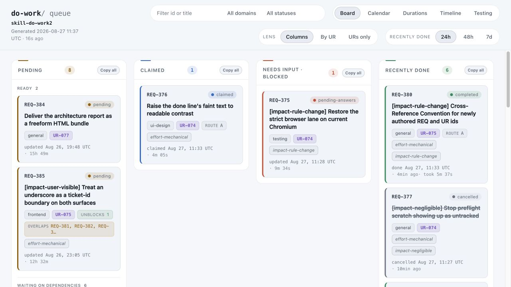
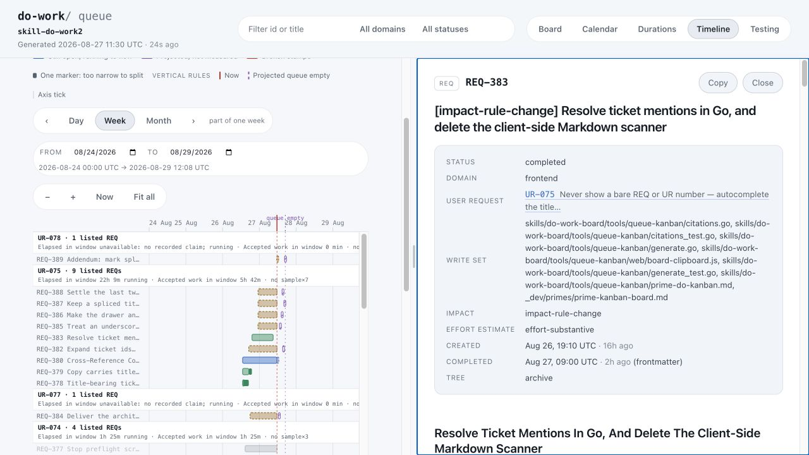
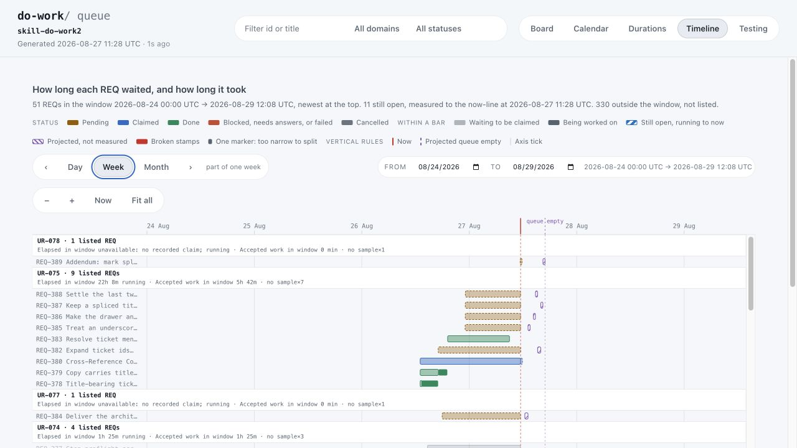
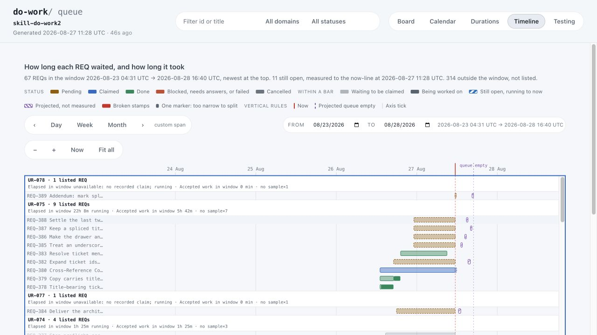

Timeline panning,
not card dragging.
REQ-341 added browser tests for an existing Timeline interaction. REQ-375 asks whether to repair one of those tests for Chrome 141. It does not propose moving Kanban cards between columns.
Current evidence: the unchanged focused test fails on Chrome 141 and passes on Chrome 151. The live Timeline can be dragged sideways. This is not evidence that ordinary Kanban cards are draggable.
Decision remains open. No REQ-375 fix was implemented. Full strict-browser verification is incomplete; the limits are recorded below.
Two views. Different interactions.
Board: status columns and clickable cards. There is no card-reordering or status-changing drag-and-drop implementation in the inspected board code.

Timeline: bars placed on a date axis. Dragging moves the date window; clicking a row opens its details. It does not change a REQ’s status or dates.

Real mouse bugs escaped the old tests.
Earlier work recorded two failures: a Timeline drag could remain active after release outside the chart, and a later repair caused ordinary bar clicks to stop opening details. Tests that merely constructed JavaScript pointer events did not exercise the browser’s actual mouse-capture behavior.
REQ-341 added a real browser-input channel and converted the test to use it. The value is specific: detect these previously missed interaction regressions before shipping them again.
The drag changes the window you are looking at.
We selected Week, pressed in the chart, moved 140 pixels right, then moved above the chart. These are two captures of the same running UI around that gesture—not a historical broken/fixed comparison.


Capture limitation: the in-app drag tool left the chart’s is-panning marker set, and a later pointer move shifted the window again. The cause was not established. These images prove panning exists, not that release worked correctly in this browser. The independent Chrome 151 test below did verify release. The capture page was reloaded before the click demonstration.
The test must notice deliberately broken behavior.
It repeats gestures with one behavior deliberately changed inside the disposable test page. Those changes do not ship to the board. The paired trials check that a green result depends on the intended protection.
| Trial | What the test does | Expected result |
|---|---|---|
| 1 · Normal click | Press and release on a Timeline bar. | The correct details drawer opens. |
| 2 · Capture too early | Make the chart capture the mouse immediately on press. | The same click no longer opens details: the test can detect the old bug. |
| 3 · Outside release | Drag outside; isolate the alternative mouse-leave cleanup path. | Mouse capture delivers the release; panning stops. |
| 4 · Capture disabled | Repeat trial 3 with capture disabled in the test page. | Panning remains active: trial 3 really depended on capture. |
REQ-375’s failure is a safeguard in trial 4: the test did not observe the mouse-leave event that its controlled comparison assumes. It refuses to claim the comparison worked. That is a test failure, not proof that a normal user’s drag fails on Chrome 141.
Version-specific result, not a blanket browser failure.
| Check | Result | Evidence and limits |
|---|---|---|
| Focused test Chrome for Testing 141.0.7390.37 | FAIL · exit 1 | Exact reported safeguard fails at line 2987. One run, 3.115 seconds. Raw output |
| Focused test Google Chrome 151.0.7922.174 | PASS · exit 0 | All four trials pass; the uncaptured comparison observes one isolated mouse-leave event. One run, 2.745 seconds. Raw output |
| Full strict browser lane Chrome 141 and Chrome 151 | INCOMPLETE | Stopped after approximately 90 seconds each. Both were stalled in a separate text-extent probe. Termination produces exit 1; it is not a completed test verdict. 141 log · 151 log |
| Default maintainer verification | PASS · exit 0 | Canonical baseline passed. Its optional browser lane was explicitly skipped because no browser was resolved on PATH without an override. This is not a strict-browser pass. Raw output |
The focused tests ran against unchanged Timeline source and test files on macOS arm64, Go 1.26.1. The existing local board provided the screenshots. Concurrent unrelated queue work changed the displayed request inventory; it did not implement a Timeline fix. No screenshot of the historical broken build was available.
Who added it, and when?
The Timeline acquired drag-to-pan.
Commit 17b9422, Git author Claude. The original Timeline feature included zooming, panning, and clickable rows.
The test acquired real browser input.
Commit 05d8309, Git author Claude. The archived request records approval through clarify on August 23.
The failing safeguard was added later.
Commit dc75446, Git author t2, added mouse-leave isolation and the safeguard now failing on 141. Git authorship alone does not identify who operated the editor.
The current code, in plain terms
web/board-timeline.js:3082–3176
Starts a possible pan on press; moves the visible date range after a 4-pixel movement threshold; cleans up on release events.
timeline_browser_probe_test.go:2820–3058
Runs the four trials and refuses to pass when the controlled comparison was not exercised.
browser_probe_test.go
Sends mouse input through the browser’s debugging protocol instead of constructing page-script events.
These paths are under skills/do-work-board/tools/queue-kanban/. The archive has no commit: field for REQ-341; its implementation commit was found independently in Git history.
Try the interaction. Read the receipts.
In the running board
Open Timeline and choose Week or zoom in. Press inside the plot, drag sideways, and watch the displayed date range. Release above the plot. Then move the pointer without holding the button: the range should stay still. Finally, click a row: its details should open.
At Fit all, the range is already at its bounds, so a drag may produce no visible movement. This does not test moving cards between columns.
Focused command · run in this session
cd skills/do-work-board/tools/queue-kanban QUEUE_KANBAN_BROWSER='/Applications/Google Chrome.app/Contents/MacOS/Google Chrome' \ go test -count=1 -v \ -run '^TestBrowserBehaviorTimelinePointerCaptureWaitsForThePanEngage$' .
To repeat 141, use the exact browser path recorded below. No installation is needed on this checkout.
Exact 141 path, strict-lane command, and source inspection
export QUEUE_KANBAN_BROWSER='/Users/t2/Desktop/e1-experimental-repos/skill-do-work2/build/chrome-141/chrome-mac-arm64/Google Chrome for Testing.app/Contents/MacOS/Google Chrome for Testing' # From the Go tool directory; strict attempts were stopped, not passed: go test -count=1 -v -run '^TestMaintainerStrictBrowserBehaviorLane$' . # From the repository root; these commit inspections were run: bash skills/do-work/scripts/show-commit-diff.sh 05d8309 bash skills/do-work/scripts/show-commit-diff.sh dc75446 # Canonical default baseline (separate from strict browser verification): unset QUEUE_KANBAN_BROWSER bash _dev/tests/maintainer-verify.sh
Set or export the browser variable for the command you run. The 141 download is an ignored local build asset, not part of this report or a project dependency.
What should happen to REQ-375?
The test protects real Timeline behavior. Its exact Chrome 141 failure is reproducible, but the unchanged test passes on Chrome 151. A fix would be compatibility work on that check—not a new drag-and-drop feature, and not a demonstrated fix for every strict-browser blocker.
Approve a scoped repair
Keep regression coverage and make the controlled comparison valid on the browsers you intend to support. Preserve safeguards; do not simply delete the failing assertion.
Defer
Leave the question open while deciding whether Chrome 141 matters to your workflow. The current Chrome 151 result reduces the case for treating it as a universal outage.
Discard the follow-up
Leave the test unchanged and accept its known 141 failure. This cancels REQ-375 only; it does not remove Timeline panning or delete the test.
My recommendation: if Chrome 141 remains a supported environment, approve the narrow compatibility repair. Otherwise defer until the supported browser versions are clear. Do not approve it on the mistaken premise that it adds Kanban card dragging.
Other clarification choices: REQ-376 approved for readability work; REQ-377 cancelled because both scratch-file names were already locally ignored. REQ-375 remains pending-answers. Nothing in this report records your decision for you.